| ID↑ | Title↑ | Year↑ |
Status
↑
|
Context
↑
|
Ideals
↑
| |
|---|---|---|---|---|---|---|
| 1 | Walking City | 1964 | Unbuilt | Urbanism | Utopian | + |
|
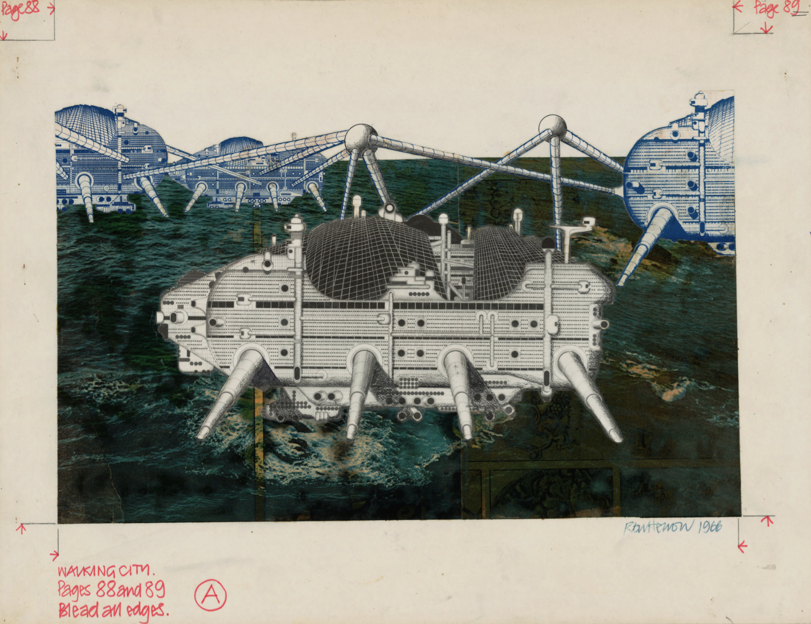
Walking City, envisioned by the radical British architecture group Archigram, proposed a future where entire cities could move, adapting to environmental changes and human needs. Designed as a series of autonomous, intelligent megastructures, each unit would function as a self-contained metropolis equipped with housing, infrastructure, and industry. The concept was heavily inspired by advancements in space travel and cybernetics, emphasizing mobility, adaptability, and technological integration in urban planning. Location: United Kingdom Check out if you like: Radical urbanism. Futuristic mobility. High-tech megastructures. Recommended by: Alice Read More |
||||||
| 2 | Continuous Monument | 1969 | Unbuilt | Artistic Intervention | Dystopian | + |

Continuous Monument, designed by the avant-garde Italian collective Superstudio, was a speculative architectural project criticizing the homogenization of modern urban spaces. It envisioned a single, seamless megastructure enveloping the world, erasing cultural and geographical distinctions in favor of a uniform, totalizing grid. The design reflected the anxieties of globalization, challenging the blind expansion of modernist architecture and its dehumanizing effects. Location: Italy Check out if you like: Conceptual megastructures. Art as urban critique. Minimalist, dystopian visions. Recommended by: Hubert Read More |
||||||
| 3 | Plan Voisin | 1925 | Unbuilt | Urbanism | Dystopian | + |
|
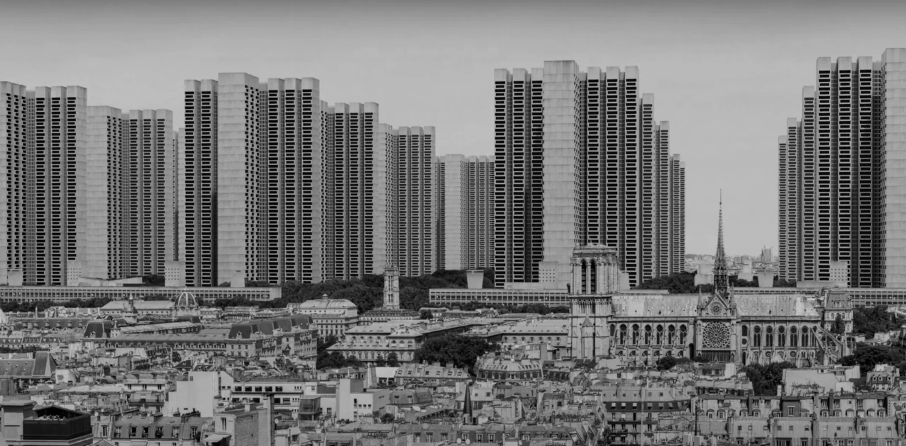
Plan Voisin, proposed by Le Corbusier in 1925, was a radical urban renewal project that aimed to demolish a significant portion of historic Paris and replace it with a grid of uniform high-rise towers surrounded by green spaces. It embodied the principles of modernist urbanism, prioritizing efficiency, order, and the segregation of functions within the city. While never realized, it sparked heated debates about modernization versus heritage preservation and heavily influenced later city planning models. Location: France Check out if you like: Modernist urbanism. High-density city grids. Functionalist architecture. Recommended by: Elena Read More |
||||||
| 4 | No-Stop City | 1970 | Unbuilt | Urbanism | Utopian | + |
|
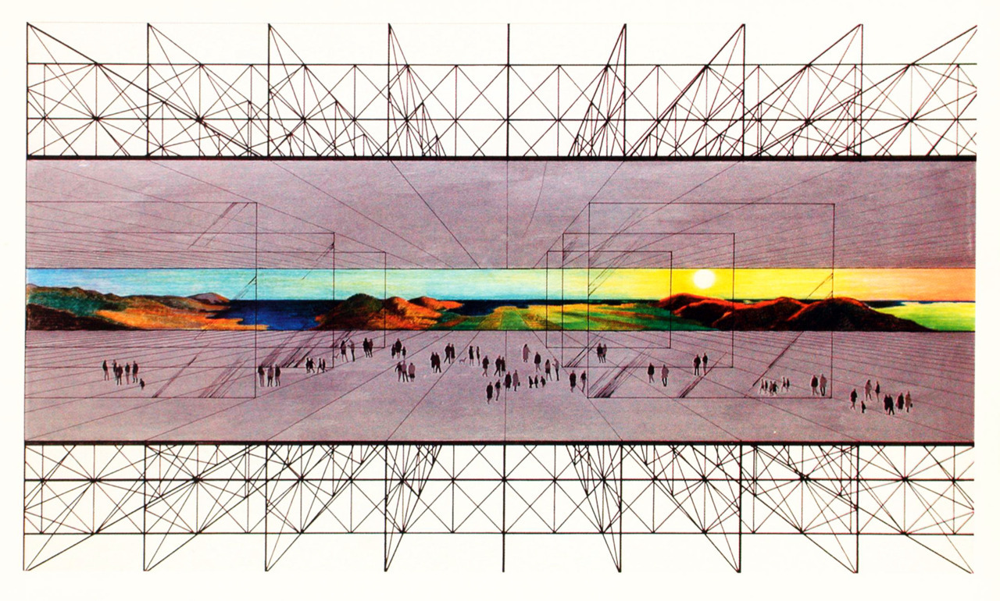
No-Stop City, conceptualized by the radical Italian collective Archizoom in 1970, imagined a boundless urban environment where zoning disappeared entirely. This infinite, grid-based megastructure challenged traditional ideas of city planning by blending residential, commercial, and industrial functions into one seamless, non-hierarchical space. The project served as a critique of consumer society, suggesting that architecture should adapt to human activity rather than dictate it. Location: Italy Check out if you like: Postmodern urban theories. Utopian urbanism. Unzoned megastructures. Recommended by: Alice Read More |
||||||
| 5 | Freedom Ship | 1990s | Unbuilt | Radical Living | Dystopian | + |
|
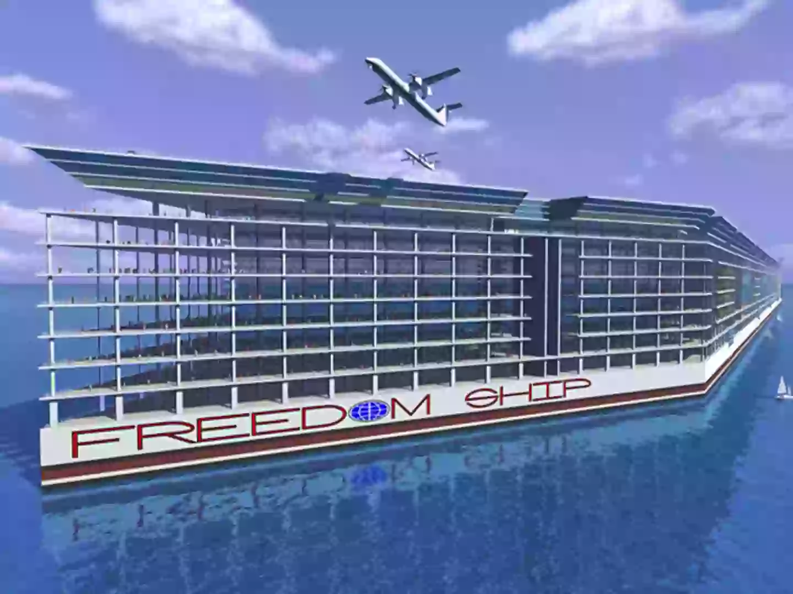
Freedom Ship was a proposed floating city concept designed by engineer Norman Nixon in the 1990s, envisioned as a self-sustaining, continuously traveling maritime community. Planned to house 100,000 people with residential, commercial, and recreational spaces, the project remained unrealized due to financial and engineering challenges. Location: Global Check out if you like: Seasteading concepts. Floating megastructures. Self-sufficient communities. Recommended by: Hubert Read More |
||||||
| 6 | Nakagin Capsule Tower | 1972 | Built | Radical Living | Innovation | + |
|
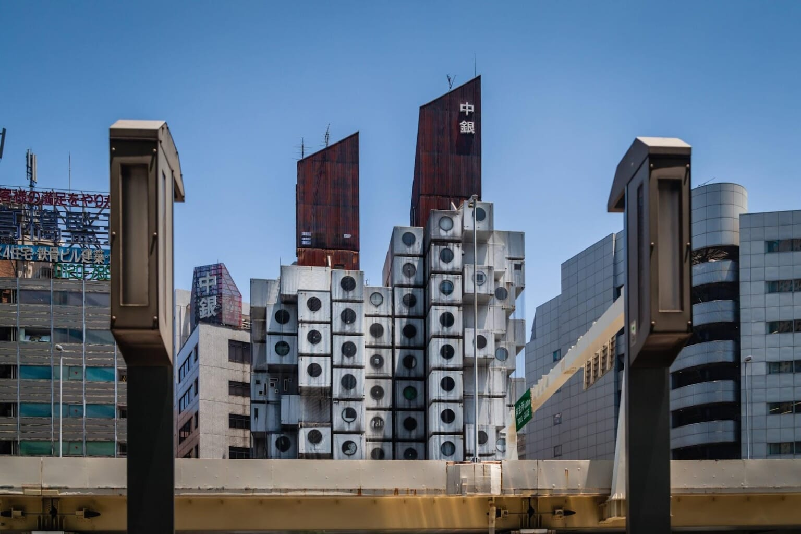
Nakagin Capsule Tower, designed by Kisho Kurokawa in 1972 in Tokyo, was a pioneering example of Metabolism, featuring modular, prefabricated living pods. Intended for rapid urban adaptability, it fell into disrepair and was demolished in 2022, highlighting the challenges of maintaining visionary architecture. Location: Japan Check out if you like: Modular housing. Urban adaptability. Metabolist architecture. Recommended by: Alice Read More |
||||||
| 7 | Kowloon Walled City | 1950s-1993 | Built | Radical Living | Dystopian | + |
|
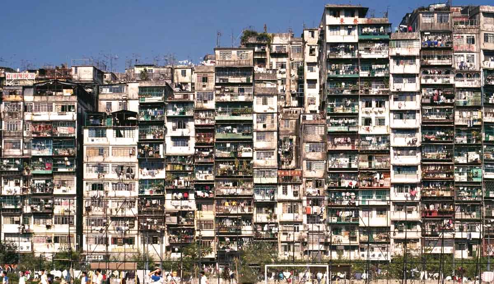
Kowloon Walled City, a hyper-dense, unregulated settlement in Hong Kong, housed over 30,000 people within just 2.7 hectares. Known for its maze-like alleys and self-sustaining economy, it was demolished in 1993, leaving a legacy of organic urbanism and informal architecture. Location: Hong Kong Check out if you like: Informal settlements. Extreme urban density. Alternative urban planning. Recommended by: Hubert Read More |
||||||
| 8 | Torre David | 1990s-2014 | Built | Radical Living | Dystopian | + |
|
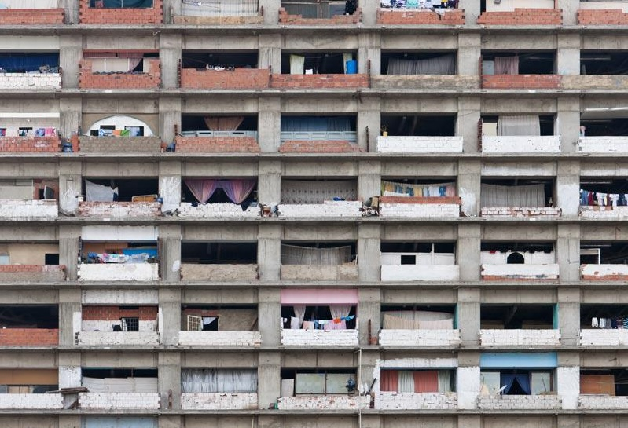
Torre David, an unfinished skyscraper in Caracas, Venezuela, was repurposed into a vertical slum after being abandoned in the 1990s. Occupied by over 1,000 families, it became a symbol of informal urbanism and self-organized living before its eviction in 2014. Location: Venezuela Check out if you like: Adaptive reuse. Informal housing. Urban resilience. Recommended by: Elena Read More |
||||||
| 9 | Terraforming Mars | 2020s & Beyond | Unbuilt | Tech Infrastructure | Innovation | + |
|
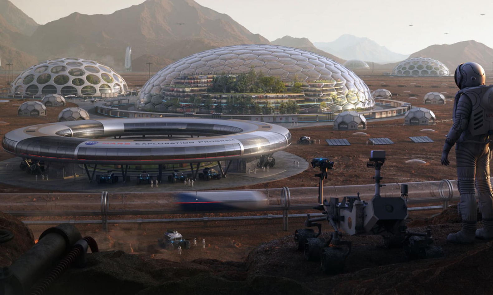
Terraforming Mars is a speculative concept explored by NASA and scientists like Christopher McKay, aiming to transform Mars into an Earth-like environment. Proposed methods include atmospheric thickening, greenhouse gas release, and introducing microbial life to enable human habitation over centuries. Location: Global Check out if you like: Futuristic design. Modular architecture. Visionary projects. Recommended by: Elena Read More |
||||||
| 10 | Futuro House | 1968 | Built | Radical Living | Innovation | + |

Futuro House, designed by Finnish architect Matti Suuronen in 1968, is a prefabricated, UFO-shaped dwelling intended for easy transport and assembly. Made of fiberglass-reinforced plastic, it reflects the era’s fascination with space-age design and modular, adaptable housing concepts. Location: Finland Check out if you like: Futuristic design. Modular architecture. Visionary projects. Recommended by: Elena Read More |
||||||
| 11 | LED News Ticker | 1980 | Built | Tech Infrastructure | Innovation | + |
|
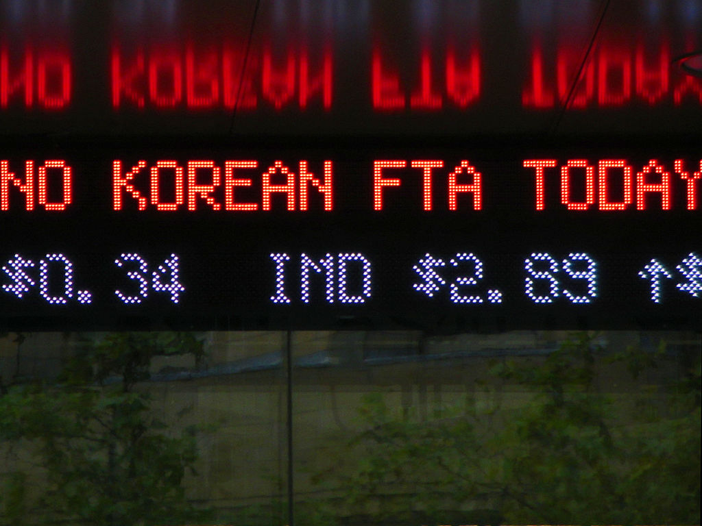
The LED News Ticker, first introduced by media organizations like BBC in the 1980s, transformed building facades into real-time information displays. By integrating scrolling digital text into urban architecture, it revolutionized public communication, merging news dissemination with city landscapes. Location: London, UK Check out if you like: Media architecture. Digital urbanism. Public communication design. Recommended by: Alice Read More |
||||||
| 12 | Arcosanti | 1970-Present | Built | Urbanism | Utopian | + |
|
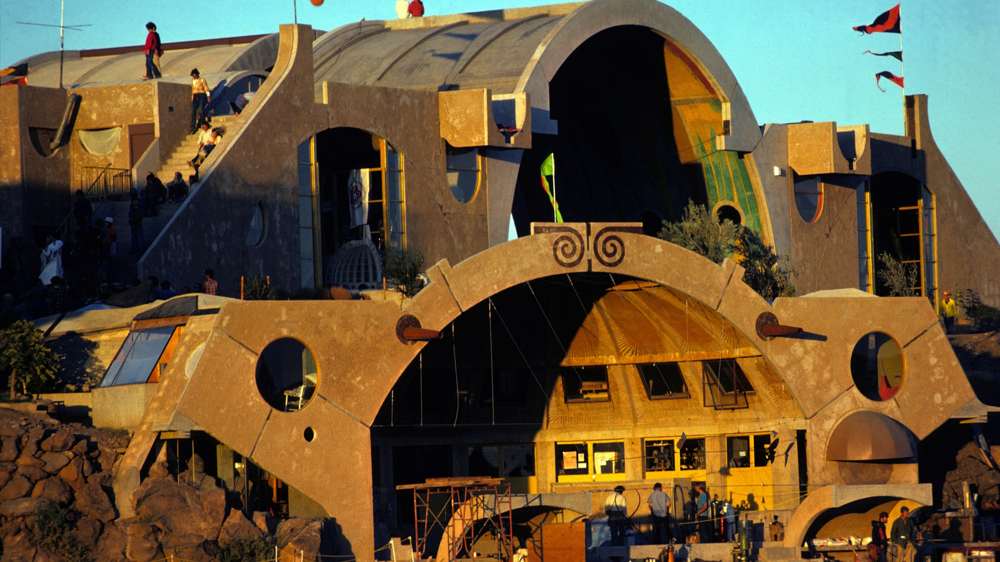
Arcosanti, designed by architect Paolo Soleri in 1970, is an experimental town in Arizona integrating architecture and ecology. It embodies the concept of arcology, combining compact urban living with environmental sustainability to minimize resource consumption and urban sprawl. Location: Arizona, USA Check out if you like: Eco-friendly urbanism. Experimental architecture. Sustainable living. Recommended by: Elena Read More |
||||||
| 13 | Wrapped Reichstag | 1995 | Built | Artistic Intervention | Deconstruction | + |

Wrapped Reichstag, a temporary art installation by Christo and Jeanne-Claude in 1995, covered Berlin’s Reichstag in silver fabric tied with blue ropes. The project redefined the historic building’s presence, symbolizing political transformation and inviting new interpretations of architecture and national identity. Location: Germany Check out if you like: Conceptual art. Temporary interventions. Political symbolism in architecture. Recommended by: Elena Read More |
||||||
| 14 | Building Cuts | 1970s | Built | Artistic Intervention | Deconstruction | + |
|
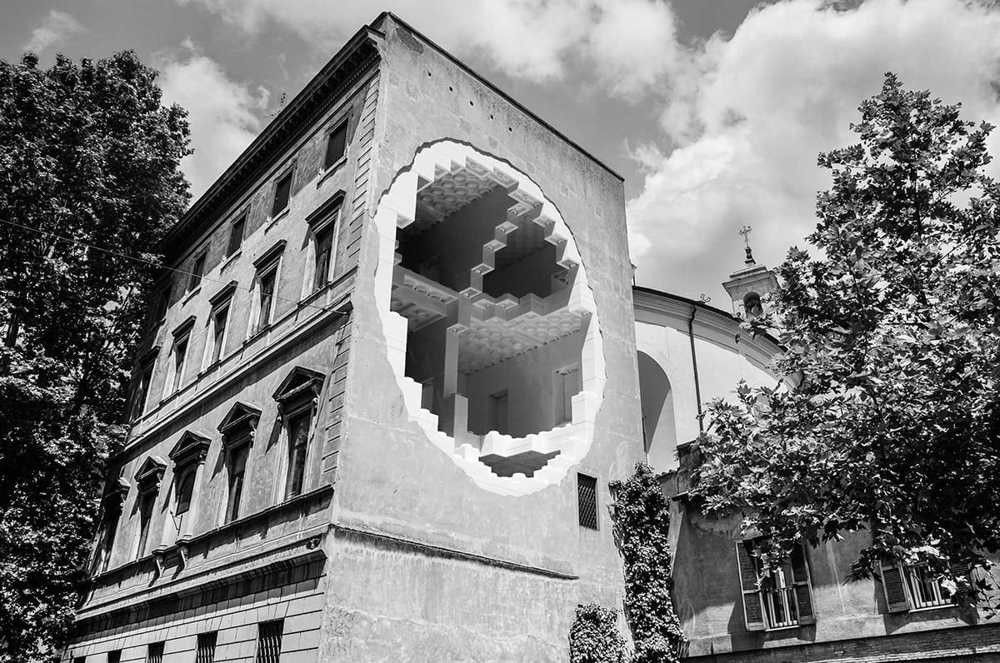
Building Cuts, created by artist Gordon Matta-Clark in the 1970s, involved slicing through abandoned buildings to reveal hidden structures and redefine architectural perception. These large-scale interventions exposed interiors, challenged urban space conventions, and transformed buildings into ephemeral sculptures before their demolition. Location: USA & France Check out if you like: Experimental architecture. Urban deconstruction. Conceptual art. Recommended by: Elena Read More |
||||||
| 15 | Neon Installations | 1960s-1980s | Built | Artistic Intervention | Innovation | + |
|
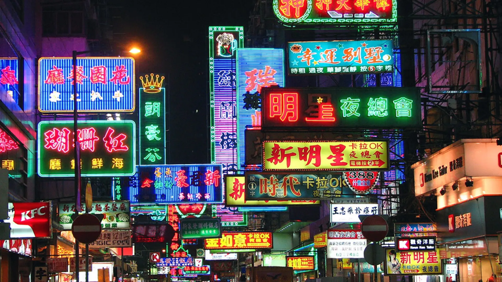
Neon installations, pioneered by artists like Dan Flavin in the 1960s, use fluorescent light tubes to transform architectural spaces through color and illumination. By integrating neon into urban landscapes and galleries, these works blur the boundaries between art, design, and environment, creating immersive and dynamic visual experiences. Location: Global Check out if you like: Light-based art. Urban interventions. Experimental architecture. Recommended by: Alice Read More |
||||||
| 16 | Hyperloop Stations | 2010s-Present | Unbuilt | Tech Infrastructure | Innovation | + |
|
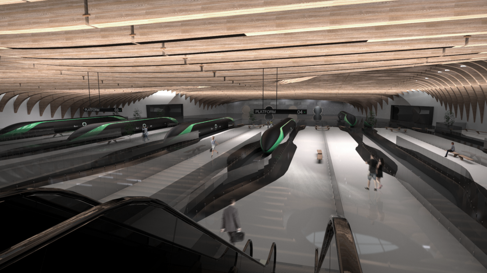
Hyperloop is a high-speed transportation system proposed by Elon Musk, using low-pressure tubes to propel passenger pods at over 1,000 km/h. Developed by companies like Virgin Hyperloop and Hyperloop Transportation Technologies, it aims to reduce travel time between cities while minimizing energy use. Its design integrates magnetic levitation and vacuum technology to achieve near-frictionless motion, revolutionizing long-distance transit. Location: Global Check out if you like: High-speed transport. Futuristic infrastructure. Technological innovation. Recommended by: Elena Read More |
||||||
| 17 | AI-Designed Cities | 2020s & Beyond | Unbuilt | Urbanism | Innovation | + |

AI-Designed Cities explore the use of artificial intelligence to optimize urban layouts, infrastructure, and sustainability. These data-driven cities adapt dynamically to environmental and social conditions. Location: Global Check out if you like: Smart cities. Algorithmic urbanism. Digital infrastructure. Recommended by: Hubert Read More |
||||||
| 18 | Oase No. 7 | 1972 | Unbuilt | Artistic Intervention | Deconstruction | + |
|
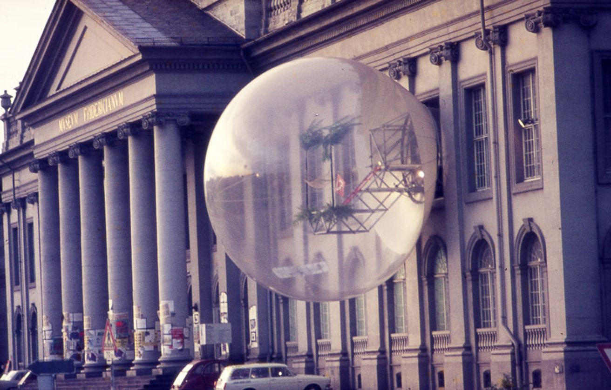
Oase No. 7 was a conceptual project by the Austrian collective Haus-Rucker-Co, designed in 1972. It featured an inflatable bubble attached to the facade of a historical building, creating a temporary spatial intervention that blurred the lines between inside and outside. This project aimed to challenge traditional architecture by integrating flexible and dynamic elements into rigid structures. Location: Austria Check out if you like: Radical architecture, inflatable structures, interactive urban installations. Recommended by: Elena Read More |
||||||
| 19 | Metaverse Urbanism | 2020s & Beyond | Unbuilt | Tech Infrastructure | Innovation | + |
|
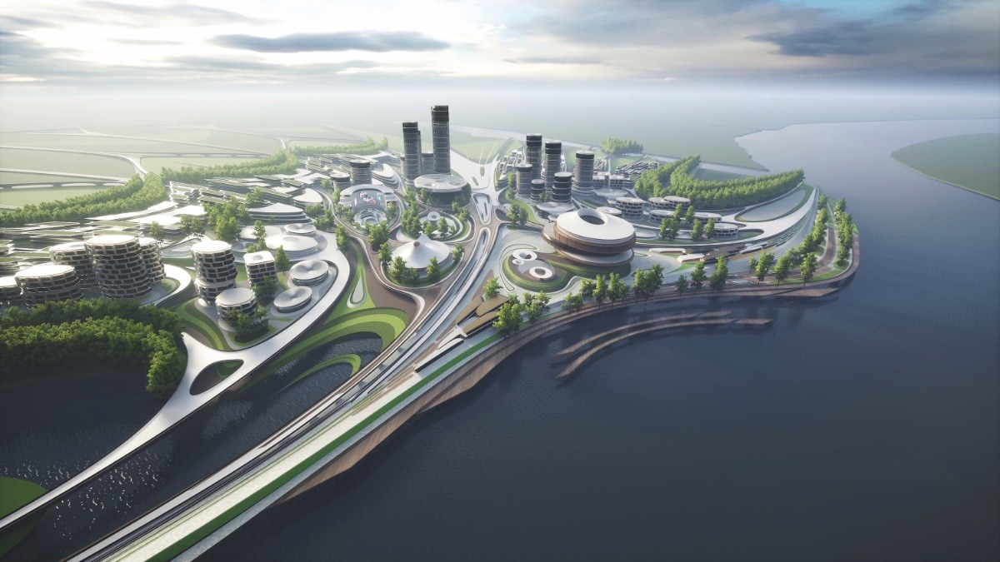
Metaverse Urbanism by Zaha Hadid Architects explores digital architecture in virtual environments, designing fluid, algorithm-driven urban spaces that defy traditional constraints of physical cities. This approach integrates parametric design and AI to create immersive, interactive metropolises for decentralized communities in the digital realm. Location: Virtual Space Check out if you like: Digital urbanism. Virtual architecture. Decentralized spaces. Recommended by: Elena Read More |
||||||
| 20 | The Line | 2023-Present | Unbuilt | Urbanism | Utopian | + |

The Line is a 170-kilometer linear city in Saudi Arabia's NEOM project, designed for nine million people without cars, roads, or emissions. It features two parallel skyscrapers, AI integration, and a high-speed transit system enabling travel across the city in 20 minutes. Prioritizing sustainability, its vertical design layers residential, commercial, and recreational spaces to redefine urban living. Location: Saudi Arabia Check out if you like: Experimental urbanism. Large-scale futuristic projects. Sustainable cities. Recommended by: Elena Read More |
||||||